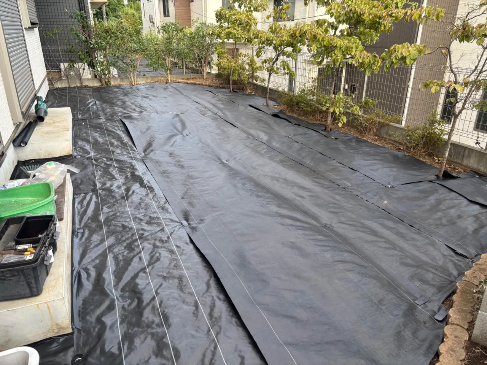
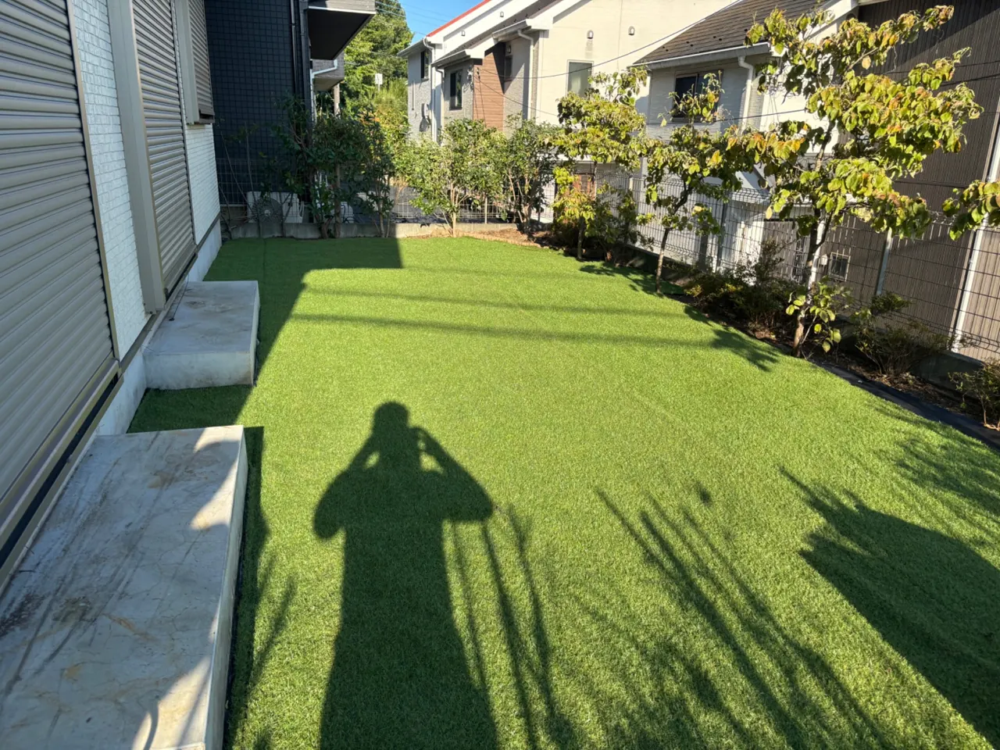
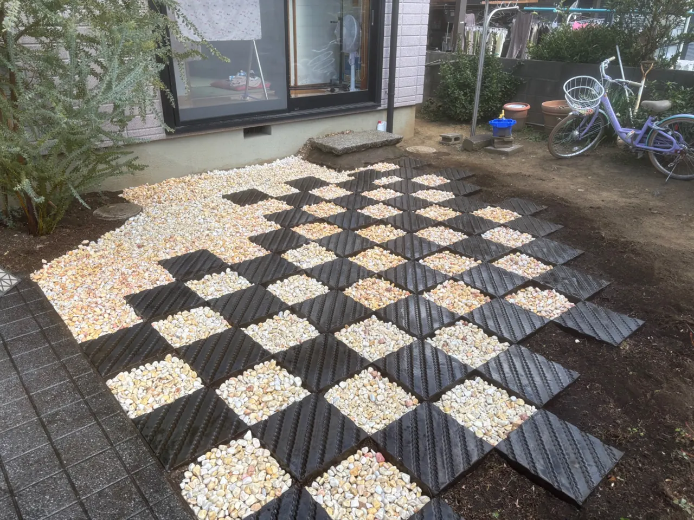
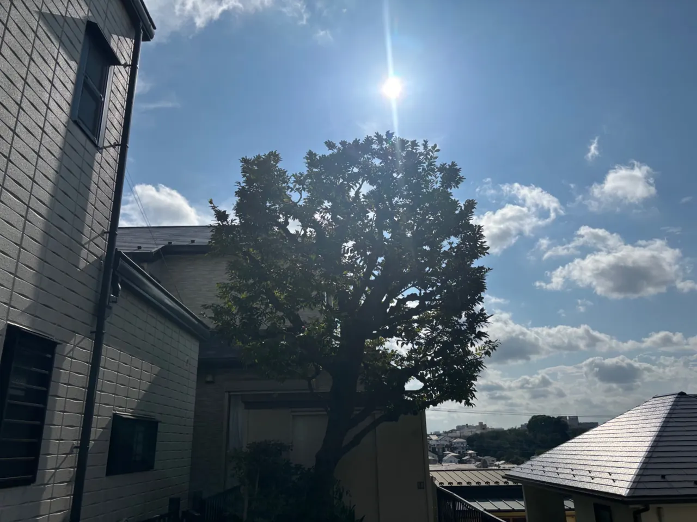
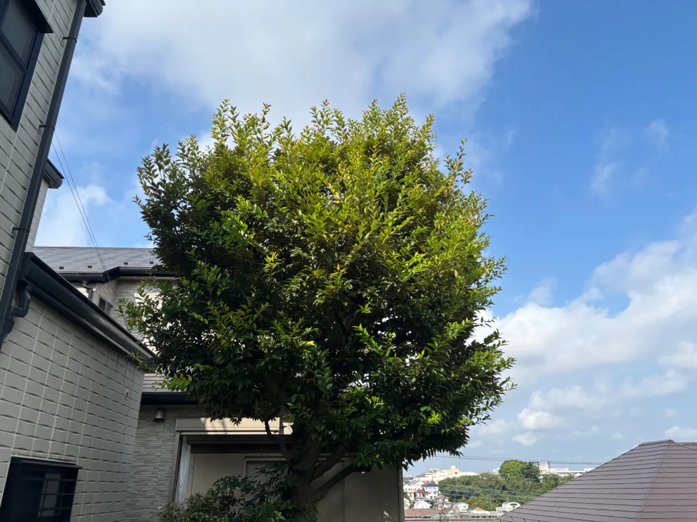

店舗・商業施設
建物まわりや駐車場、植栽帯の草刈り・剪定・落葉清掃など。
FOR BUSINESS / PROPERTY MANAGEMENT
店舗・工場・商業施設・管理物件の草刈り・植栽管理
「雑草が伸びるたびに業者を探している」「施設の美観を保ちたい」「複数の管理作業をまとめて相談したい」。そんなお悩みに、敷地の用途や季節に合わせた管理方法をご提案します。年間管理はもちろん、単発作業のご相談も承ります。

DO THESE SOUND FAMILIAR?
管理担当者様やオーナー様の、日々の手配負担を軽くすることも私たちの仕事です。
雑草が伸びるたびに、業者を探して見積もりを取っている
店舗・工場・賃貸物件の外周が、いつの間にか荒れてしまう
越境枝や落葉など、周辺への配慮が必要になってきた
作業後の状況を、現地へ行かずに確認したい
OUR MANAGEMENT
店舗・工場・管理物件など、用途や周辺環境に合わせて必要な作業をご案内します。
建物まわりや駐車場、植栽帯の草刈り・剪定・落葉清掃など。
フェンス沿い、設備周辺、敷地内の雑草や樹木の管理。
共用部や外周の植栽管理、越境枝の整理、雑草対策など。
定期的な草刈りや巡回時の軽作業など、敷地の維持管理。
MAINTENANCE MENU
敷地や植栽帯に生える雑草の管理
庭木・植木の形を整え、通路や隣地側に伸びる枝を整理
見た目や日常の管理負担に配慮した清掃・整理
状況に応じた防草シート施工や伐採もご相談可能
ANNUAL MAINTENANCE
「何を、いつ、何回行うか」を敷地の状況に合わせて整理。毎回一から業者を探す手間を減らすための管理方法をご提案します。
雑草の立ち上がりや植栽の状態を確認し、必要な除草・剪定をご相談。
草の伸びやすい時期の草刈り、植栽帯やフェンス沿いの整理。
樹木の状態や落葉の状況を踏まえ、剪定・清掃などを調整。
年間の管理状況を振り返り、次年度の作業範囲や時期を検討。
※ 上記は年間管理の考え方を示す一例です。実際の時期・回数・内容は、樹種・立地・予算・ご要望に応じて個別に設定します。全季節の作業が必要という意味ではありません。
敷地の場所・広さ・管理したい内容をお知らせください。
WHY REGULAR MAINTENANCE
草木の伸びる季節や現場の状態を踏まえて、作業時期・回数を相談できます。
草刈り・剪定・防草対策など、複数の作業をまとめてご相談いただけます。
作業前後の写真付き報告など、ご希望に合わせた報告方法をご相談いただけます。
※ 作業範囲・頻度・料金・報告方法は、現地状況とご希望を確認のうえ個別にご案内します。年間契約だけでなく、単発・季節ごとのご相談も可能です。
OUR WORKS
施設敷地の防草施工に加え、住宅での防草シート・人工芝・庭木剪定などの作業例をご紹介します。施工前後の変化をご覧ください。
設備や配管まわりに生えた雑草を整理し、設備の配置に合わせて防草シートを施工しました。日常点検や敷地管理のしやすさにも配慮した作業事例です。
 BEFORE / 施工前AFTER / 施工後
BEFORE / 施工前AFTER / 施工後 BEFORE / 施工前
BEFORE / 施工前 AFTER / 施工後
AFTER / 施工後ADDITIONAL WORKS / RESIDENTIAL
法人・施設管理に加え、住宅のお庭でも草木の整理や防草施工に対応しています。異なる施工内容を、写真でご紹介します。
草木や物が多かったお庭を整理し、防草シートを敷いた後、人工芝で仕上げた施工例です。工程ごとの変化をご覧いただけます。
 BEFORE / 施工前
BEFORE / 施工前
DURING / 施工中
AFTER / 施工後既存の地面とマット状の資材が見える施工前の状態から、化粧砂利と資材を組み合わせた仕上がりをご紹介します。
 BEFORE / 施工前
BEFORE / 施工前
AFTER / 施工後枝葉の茂った庭木を、周辺の建物や樹形に配慮しながら剪定した作業例です。別の現場の剪定写真も合わせて掲載しています。
 BEFORE / 施工前
BEFORE / 施工前 AFTER / 施工後
AFTER / 施工後
BEFORE / 施工前
AFTER / 施工後枝葉の状態を確認しながら、一本ずつ丁寧に手を入れている作業中の様子です。
 ON SITE / 作業風景
ON SITE / 作業風景※ 施工写真は個別の現場の一例です。作業方法・仕上がりは現場条件により異なります。
施工事例をまとめて見るFLOW
施設の種類・場所・ご希望の作業を、フォームまたはお電話でお知らせください。
必要に応じて現地を確認。作業範囲、立地や周辺環境、希望時期などを伺います。
作業内容・回数・報告方法などを整理し、費用とあわせてご案内します。
内容にご納得いただいたうえで施工。継続管理では次回の管理時期なども相談します。
SERVICE AREA
神奈川県：相模原市・厚木市・海老名市・座間市・大和市など
東京都：町田市・八王子市など
店舗・工場・マンション・アパートの敷地管理や植栽の年間管理をご相談いただけます。その他の地域も、作業内容によりご相談ください。
Q & A
植栽の種類、雑草の生育状況、敷地の用途によって異なります。現地の状況とご希望を確認し、作業時期・回数をご提案します。
はい。年間管理のほか、単発の草刈り・剪定・防草対策もご相談いただけます。
作業前後の写真付き報告など、ご希望の報告方法についてお見積もり時にご相談いただけます。
はい。管理物件ごとに場所や作業内容を伺い、対応方法を検討します。所在地や管理希望時期をまとめてお知らせください。
敷地面積、草木の状態、作業範囲、回数、廃材の処理方法などによって異なります。現場の内容を確認のうえ、個別にお見積もりします。
作業時間帯や周囲の状況など、配慮が必要な点を事前にお知らせください。現場条件に応じて対応方法を検討します。
CONTACT FOR BUSINESS
管理物件や施設の状況に合わせてご案内します。年間管理・単発作業のいずれもお気軽にお問い合わせください。施設名・所在地・希望時期・主な作業内容が分かれば、より具体的にご案内できます。